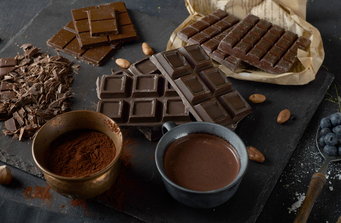
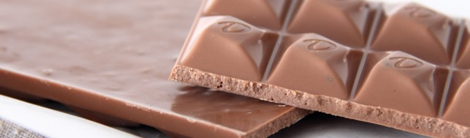
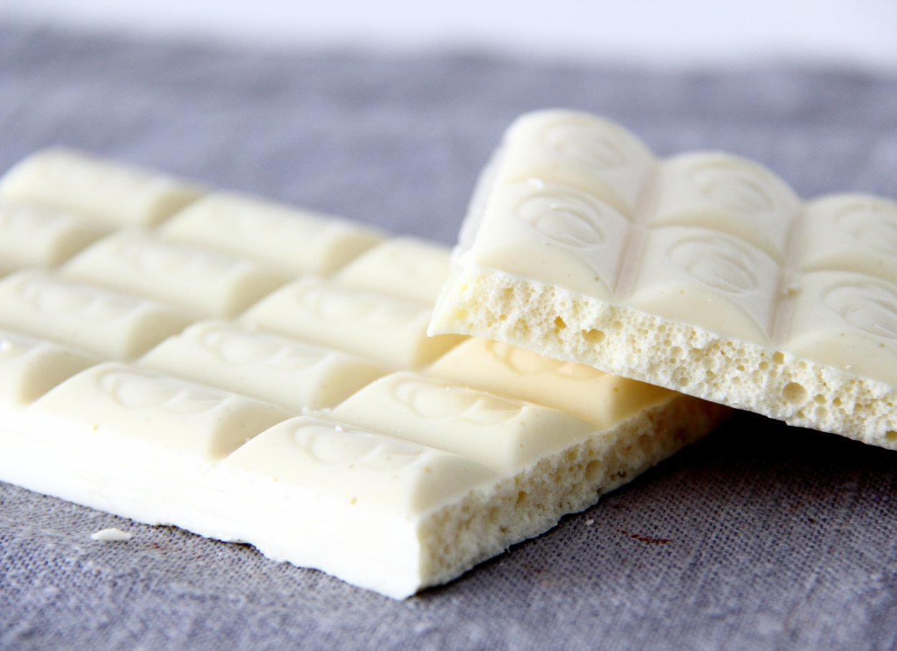
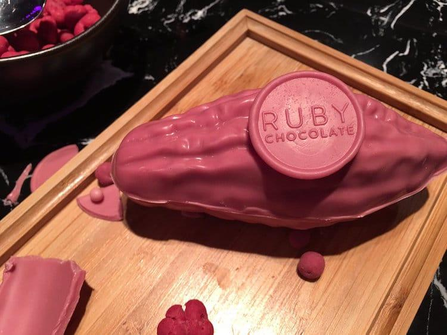

Шоколад
В зависимости от состава шоколад делят на горький, молочный и белый
Темный (горький) шоколад делают из тёртого какао, сахарной пудры и масла какао. Изменяя соотношение между сахарной пудрой и какао тёртым, можно изменять вкусовые особенности получаемого шоколада — от горького до сладкого. Чем больше в шоколаде тёртого какао, тем более горьким вкусом и более ярким ароматом обладает шоколад. Самый горький шоколад продают под названием «горький», менее горький — под названием «тёмный». Довольно прочен и тает только в ротовой полости.
Молочный шоколад с добавлениями изготавливают из тёртого какао, масла какао, сахарной пудры и сухого молока. Чаще всего используют плёночное сухое молоко жирностью 2,5 % или сухие сливки. Аромат молочному шоколаду придаёт какао, вкус складывается из сахарной пудры и сухого молока. Имеет светло-коричневый оттенок. В отличие от тёмного или горького шоколада легко тает как в ротовой полости, так и под действием факторов внешней среды (высокая температура воздуха). Основное сырьё для производства глазурей.
Белый шоколад готовят из масла какао, сахара, сухого молока и ванилина без добавления какао-порошка, поэтому он имеет кремовый цвет (белый) и не содержит теобромина. Своеобразный вкус белый шоколад приобретает благодаря особому сухому молоку, имеющему карамельный привкус. Также легко тает при высоких температурах воздуха.
Рубиновый шоколад из какао-бобов, выращиваемых в Кот-д'Ивуаре, Эквадоре и Бразилии. Никаких ягод или красителей в шоколад не добавляют. У нового сорта шоколада, который получил название «рубиновый», натуральный розовый цвет и ягодный вкус. Создал новинку один из мировых лидеров на рынке шоколада Barry Callebaut. Компания работала над ней 13 лет.
А какой шоколад вам понравился?
Топ 10 самых необычных форм шоколада